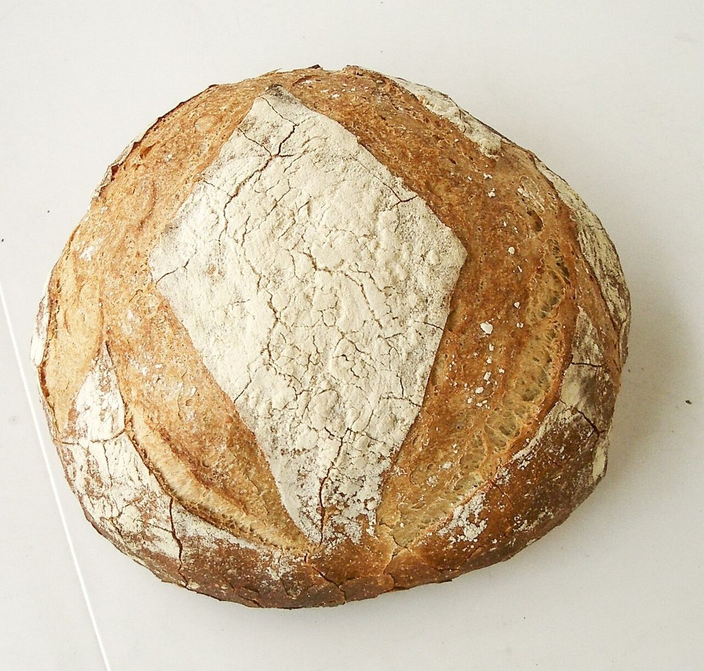

tuctuc
パン屋 / 高知県香南市
高知県香南市香我美町にあるパン屋「tuctuc」のご案内ページです。営業時間やメニューなどの詳しいことは準備中。まずはInstagramをのぞいてみてください。

撮影地不明のイメージ制作側の連想
「tuctuc」の響きから、三輪の車体ステッカー帖
店名の由来は分かりません。制作側は「tuctuc」の響きから、東南アジアの街で走る三輪の乗り物「トゥクトゥク」と、エンジンの軽い音を連想しました。そこでこのサイトは、三輪の車体にステッカーを一枚ずつ貼っていくように、ページを作っています。車輪は3つ、ステッカーは5面。お店の理念や由来とは無関係の、制作側の連想です。
三つの車輪
丸く切り抜いた、パンの写真(イメージ)
写真は香南市やお店のものではありません。国外または撮影地不明のフリー素材で、お店で提供しているパンを示すものでもありません。
 前輪撮影地不明のイメージ
前輪撮影地不明のイメージ 左の後輪撮影地不明のイメージ
左の後輪撮影地不明のイメージ 右の後輪撮影地不明のイメージ
右の後輪撮影地不明のイメージ
ご案内